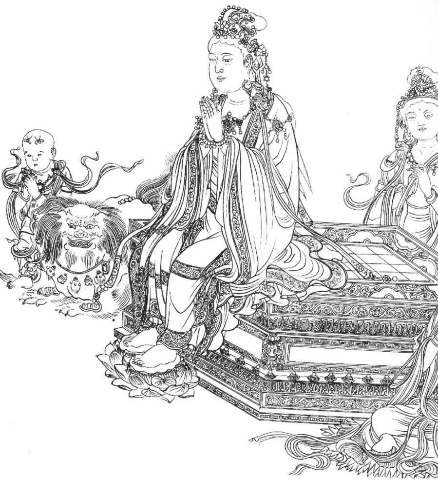
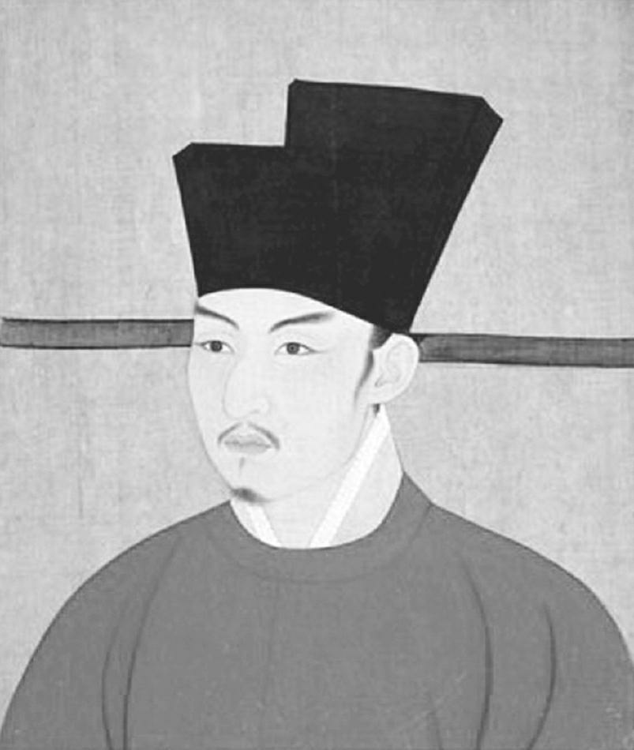

宋哲宗绍圣元年 至 徽宗建中靖国元年
（1094年 — 1101）
第二十四章·二度迫害 第二十五章·岭南流放 第二十六章·仙 居 第二十七章·域 外 第二十八章·终 了
在元祐八年（一〇九三年）秋天，有两个女人逝世，就是苏东坡的妻子和当政的太皇太后，我们几乎相信两个女人都是苏东坡的守护神，说来似乎神秘难解。她俩的去世和苏东坡命运的逆转赶得极巧。苏东坡的妻子死于八月初一，太后则死于九月初三。苏夫人死时，苏东坡正红运当头，这时苏夫人去世，正好躲开了苏东坡一生中最为凄苦伤心的一段。苏东坡应召离开扬州还朝之后，先做两个月的兵部尚书，十个月的礼部尚书，他弟弟子由则官居门下侍郎。苏东坡的夫人曾陪同太皇太后祭拜皇陵，享受她那等级贵妇所能享受的一切荣耀，儿子都已长大成人，已然婚配，都在身旁。迈是三十四岁，迨是二十三岁，过是二十一岁。次子娶的是欧阳修的孙女。所以苏夫人的丧礼是完全按着她的身份隆重举行。她的灵柩停厝在京西一座寺院里，一直停到十年以后，子由将她的遗骸和她丈夫埋在一个普通的坟墓里。苏东坡给她写的祭文措辞妥帖、典雅含蓄。说她是贤德的妻子、贤德的母亲，视前妻之子一如己出。丈夫宦海浮沉，穷达多变，为妻子的一直心满意足，绝无怨尤，苏东坡誓言生则同室，死则同穴。妻子死后百日，苏东坡请名画家李龙眠画了释迦牟尼及十大弟子像，在请和尚给她诵经超度往生乐土时，将此佛像献与亡魂。
说真格的，太皇太后，也就是神宗之母，当今皇帝哲宗之祖母，也曾经是苏东坡的守护神。她之去世也就是苏东坡的没落之始，也是她当政期间那些贤臣的没落之始。这位贤能的老太皇太后已经感觉到一种政情的改变，因为皇孙已经在她身边长大，而且她对此皇孙之品性十分清楚。这个孩子有点儿艺术天分，可是在别的方面则很轻率鲁莽，脾气暴躁，颇容易被老奸巨猾的大臣玩弄于股掌之间。他养成了对祖母的反感，这颇为王安石一帮人所利用，并且很可能最初是由王安石那群小人挑拨而起的。
在老太皇太后去世前十天，六位大臣进宫探病，其中有范纯仁、苏子由。
老太皇太后说：“我看我也好不了啦，与诸卿见面之日已经不多。汝等要尽忠心辅保幼主。”
众大臣将要退去之时，太皇太后示意范纯仁留下。皇帝哲宗即命别人退下，只留下范纯仁和吕大防。
《维摩演教图卷》（局部） 线描图 李公麟 宋
李公麟（1049—1106），北宋著名画家。字伯时，号龙眠居士。他的一生在仕途上不甚得意，但诗文书画成就很高。李公麟虽然被列入了文人画家之列，但是他除了后世文人画家所擅长的山水花鸟题材之外，更擅长人物、鞍马。他把过去仅作为粉本的白描画法确立为一种画种，使之独立成科。
太皇太后捉到一个窃窃私语之下的谣言，说她阴谋不利于当今皇帝，想使自己的儿子取而代之。她说：“先王神宗皇帝嘱咐老身在当今皇帝年幼之时处理国政。在过去九年，诸卿曾否看见我对我娘家高姓特施恩典？”
吕大防说：“没有。太皇太后从未对娘家特别开恩，而是完全以国家利益为重。”太皇太后两眼垂泪，她说：“我自信诚然如此，也因此现在我临终见不到我那亲生的儿女。”因为她没使自己的儿子在京为官。
吕大防说：“臣深信太皇太后必可早日康复，要听大夫的话，现在最好不要说这些事情。”
太皇太后说：“我想在你们面前告诉皇帝几句话。我知道我死之后，大臣之中有很多人要愚弄皇帝。孙子，你可要提防那些人。”说着转脸向吕、范二人，说：“我的意思是，我死之后，你们二人最好辞官归隐，因为幼主必然另用一批新人。”
然后她问近侍是否已邀请来探病诸大臣留此用膳，她向吕、范二大臣说：“现在去用饭。明年今日，莫忘老身。”
太皇太后刚一去世，苏东坡即获得外放。一如他之所请，他的任所是个问题诸多号称难治的地方。他奉命统领河北西部，并指挥该地区的步兵骑兵，官衙设在定州，离北平不远。按照宋朝制度，文官往往担任军职，而以武将为副手。苏东坡担任此一官职一段时期，甚为有趣，因为可以看出一个诗人画家如何在军旅中发号施令。当时军中行政腐败，兵饷过低，衣食俱差，军营破烂。处处腐败，军纪废弛。士兵与军官沉溺于酗酒、赌博。遇敌不是溃不成军，就是逃逸无踪。苏东坡开始修缮营房，整饬纪律，对腐败军官予以惩处或革职，先使士兵吃好穿好。
有些低级军官看见苏东坡惩治腐败的军官，前去密告上级。苏东坡告诉他们说：“这个你们不要管，这是我分内之事。若许下级官兵控告上级官长，军纪岂不荡然无存！”于是他也将此告密者一并惩处。他任一地方军之首长，对自己当受之礼貌尊敬，甚为重视。他身着正式戎装，举行校阅，与将校副官按照等级站立。当时军中首领王光祖，乃一骄悍老将，在此统制此一驻军多年，现在觉得自己的权力渐被剥夺。在一次校阅之时，拒不参加。苏东坡下令命他参加，老将只好听从命令。
一个王朝若要不发生悲剧，若想保有此一王朝的权力，那些皇后则必须生一连串贤德多才的儿子、孙子、重孙子——但是这是无法保证的，是人间闻所未闻、经所未经的。天才不必然产生天才，英明之主早晚也难免生出庸弱邪恶的后代。国家的太平安乐，甚至历史发展的路线，完全要以一家遗传基因偶然的改变为转移。造物不容许某一家一姓将英才独占，所以路易十六不同于路易十四，乔治三世也不同于乔治二世。法国大革命和美利坚民主国之得以成功，要拜谢这两位法英帝王的神经质的头脑之赐了。
现在身登王位的幼主年只十八岁，而性好女色，时常辍学。因为元祐年间的士大夫给太皇太后和幼主上表进谏，劝幼主不应当沉溺于女色，应当研求治道，好学深思，因此小皇帝对元祐这些儒臣早存厌恨之心。皇帝四周时常有二十个双十年华的少女伺候，这也是皇家老例。后来，皇帝告诉章惇，说一天忽然发现十个宫女全都不见，另来了十个接替她们。几天之后，这十个又遭撤换，临走告别时，显得都曾哭过，好像曾被祖母严密盘问过。
这位年轻皇帝何以对两位大臣如此痛恨，必须说明一下。刘安世几遭谋杀，幸遇一个好机会，才得活命；范祖禹则遭流放而死。四五年前，出了一件事。一天，刘安世想为他嫂子雇一奶妈，居然不易找到。徒然等了一个月，刘安世大发脾气，向佣工介绍所的老妇人问为什么找不到人。
老妇人说：“大人，小的正尽力找呢。宫里的总管大人要十个奶妈，今天才找到送去。”
刘安世大惊道：“荒唐！皇帝还没娶后，雇奶妈干什么？”
老妇人解释说，东宫门的老爷们向她严厉嘱咐，要她保守秘密。刘安世还是不肯相信。他给宫廷内总管办公室的一个朋友写了一封短信，那个朋友证明是确有其事，因此刘安世上了一道表章，几件事之中有一项，他说：“乃者民间欢传宫中求乳媪，陛下富于春秋，未纳后而亲女色。臣初闻之，不以为信，数月以来，传者益多。言之所起，必有其端。”他警告说，如果任凭闲话这样传下去，民间恐怕对此事不高兴。
另一个大臣范祖禹给皇帝上书说：“臣自今秋，闻外人言陛下于后宫已有所近幸。臣诚至愚，不能不惑。陛下今年十四岁，此岂近女色之时乎？岂可不爱惜圣体哉？”有人说这谣言是出乎误会。一天，散朝之后，太皇太后要吕大防暂且留下，对他说：“关于宫中雇奶妈之事，刘安世上了一道表章。他用意至善，只是不了解其中实情。皇帝并不需要奶妈，是几个小公主还要吃奶。皇上一直和我在一起，夜里睡在内宫。这种谣言，毫无根据。我问过宫女，问不出什么。告诉刘安世，不要再奏这件事。”吕大防说：“刘安世是御史，按照习惯，我做宰相，是不能私下见御史的。”太皇太后说：“那么怎么把我的话告诉他呢？”
吕大防说：“我常在集英殿看见范祖禹。我告诉他太皇太后的意思，叫他告诉刘安世，他俩也是同乡。”
太皇太后说：“范祖禹也奏过这件事。你告诉他也不要再奏了。”
等这话传到刘安世，他对范祖禹说：“这与圣德有关，我怎么可以闭口无言呢？你为陛下近臣，也应当直言无隐才是。”
范祖禹回答说：“我已经说过。”
二人认为雇奶妈之事虽然也许出于误会，他们还是应当忠言直谏才是。但是刘安世得罪的尚不仅是皇帝一个人。在太皇太后摄政期间，他还反对过对章惇的赦免于罪，因而惹起此一邪恶阴险小人的毕生大恨。
在另一方面，章惇——这个苏东坡的故友，则利用年轻皇帝的好色。后来有人因此弹劾他：“以奇技淫巧荡上心，以娼优女色败君德。”他知道皇帝的宠姬是“刘美人”，并不是皇后。我们不必详叙此皇后的经历，北宋灭亡之后，她还在世，她的荣枯沧桑史可以写成一部好小说。我们只提她曾被诬告用邪术吧。有人用道士的符咒纸人从窗口扔到她屋里，恰巧又被调查者发现。宫女在折磨笞刑之下，被迫做证说，曾经看见皇后用针刺在刘美人的纸像心上，这是道士的邪术，能使本人心痛。有三十个宫女几乎被鞭笞而死。这件案子不由正式法庭审问，而是在宫中暗中进行的。皇后于是正式贬为道姑。刘美人这才扬言心口不再疼痛。她被立为皇后，而年轻皇帝也快活了。可是，后来这位刘美人却因故寻了短见。
帝国命运之所寄，国家治安之所系的宋室皇孙竟是这样的性格。几个奸佞之臣来玩弄这么一个十八岁的孩子，国家陷于无可救药的混乱，已可未卜先知了。
新朝的新口号是两个字“绍述”，是率由旧章无违祖制之意，在中国人看来自然是合理合法的。皇帝立刻就要将神宗的新政新经济政策恢复了。这样，在太皇太后摄政期间的老臣都可以被控破坏他父王的德政之罪，这就是不忠于先王。在以前控告苏东坡时，就屡次以此为题。但是，神宗自己的生身之母在皇帝和大臣面前，曾经证明神宗晚年已然深悔过去的错误，这反倒不足重要。众官员曾提醒皇帝太皇太后对他们所说的话，也不足为重。对所有反对新政的人，都挂上破坏先王德政的罪名而贬谪之，倒是方便省事。现在是哲宗绍圣元年（一〇九四年）的初夏，在“杨三变”推荐之下，章惇官拜相位。为了使皇帝深信所有元祐诸臣都是皇帝的敌人，章惇以他们都犯有破坏先王的新政之罪而予以控告，还嫌不够。章惇这群人都是精明能干的政客，他们必须使皇帝痛恨所有元祐诸臣不可。当然，最足以伤害到皇帝个人的，莫如说某人当年曾与太皇太后密谋夺取他的皇位。由于死无对证，又由于对宫廷官吏采用刑逼，阴谋之辈自然能捏造莫须有的造反谣言。
当年老太皇太后摄政之时，章惇和蔡家弟兄皆投置闲散。蔡确因怨生恨，因而传播太后要使自己的儿子身登皇位。蔡确的阴谋败露，被流放而死。现在太皇太后已死，谣言复炽，成了重要的政治问题。
现在他们控告的是司马光和王珪是此一阴谋的共犯。但除去据说有两段对话之外，别无证据。已死之人既不能证实，也不能否认。据说司马光曾经和范祖禹讨论过此一问题。范祖禹而今正贬谪远方，即便受到盘问，一定坚决否认。总之，现在已经捏造出一个印象，就是老祖母在世之时一直想排斥自己的孙子。她的两个私人秘书，一个叫陈衍，已经贬谪到南方，他不在京都时，自己的案子就被审问判决了，判处死刑。另一个调进京来。章惇和他打交道。在使他受了一段苦刑之后，章惇告诉他面前有两条路走，一是死，一是以太皇太后秘书的身份，为这次诉讼，证明太皇太后曾经密谋排斥她的孙子。那位秘书大呼道：“天哪，我怎么能证明太皇太后没做的事呢！”他不肯屈服，调查只好就此中断。但是章惇和蔡氏弟兄却弄得皇帝对司马光和元祐诸臣疑云重重了。
皇帝问：“所有元祐诸首脑人物都会如此吗？”
章惇回答说：“他们都有此意，只是没机会实行罢了。”
一个推翻皇帝的大阴谋已经揭开，年轻的帝王冲冲大怒。一群奸党甚至说要把太皇太后的灵牌排除在祖庙之外，幸亏幼主还没糊涂到误听此等谗言的地步。他对章惇说：“你要我永远不进英宗先皇帝的祖庙吗？”但是罢黜、监禁、贬谪的圣旨简直密如雨下。与苏东坡同时，有三十几个元祐期间的大臣受了降官或贬谪。惩处大臣人数之众，为往古所未有。章惇报仇的机会终于到来。他现在冒着恶魔般的怒火在疯狂般进行，因为太皇太后摄政期间，他曾身遭监禁，当年苏东坡预测会犯谋杀罪的人，现在当权了。正如同他当年横过下临不测之深涧的一条独木桥，他一向是天不怕地不怕的。在京都之时，他曾和他族叔的情妇通奸，他曾经从窗子跳出来，砸伤一个街上的行人，但是那件事情没有认真起诉。在王安石当权之时，正人君子派的大臣都因进忠言而丢官，章惇则左右逢源，步步高升。
现在章惇刚在四月官拜宰相之职，他立刻把旧日的狐朋狗党都召还京都，畀予重位。这一群人也非比寻常，都是精力过人，长于为恶。“杨三变”是他的莫逆之交。蔡确已死，但是别的人还活着。巨奸吕惠卿又已得势，但因过去名声狼藉，并未能飞黄腾达。其他王安石的亲信，如曾布，也已经奉召还朝。北宋的歪才巨擘蔡氏兄弟，现在又跨踞政坛的津要之位，以其虐政引导北宋走上了灭亡之路。倘若中国历史上要找一个时期以其极端的残暴混乱著称，则非蔡京当政时期莫属。他给皇帝建造一座精美的花园，因此使百姓遭受的荼毒，在中国历史上，到了使人毛骨悚然的地步。皇家一座乐园也无须乎压榨那么多的民脂民膏，使老百姓那么肝脑涂地呀！园中的奇花异石，每一件都要了几条人命。一读徽宗的赋和大臣作的诗，赞美御花园犹如神仙世界般的美丽，以及其假山、溪流、岩石等，使人脊椎打战，感觉到中国文学史上无可比拟的悲剧意味。其悲剧意味是在于这些诗赋作者并不知道那背景之凄惨可悲！
宋哲宗
宋哲宗（1076—1100），名赵煦。登基时只有九岁，由高太后执政，到了元祐八年（1093年）开始亲政。哲宗是北宋较有作为的皇帝。但是新党与旧党之间的党争在宋哲宗当政期间不但没有获得解决，反而激化，这也种下了北宋灭亡的隐患。
若把这第二次对儒臣的迫害和王安石的放逐政敌相比，第一次迫害只是小孩子的把戏而已。司马光和吕公著已死，但不得在九泉之下安眠。这两位当年的宰相躺在坟墓之中，仍两度遭受降级，并剥夺爵位和荣衔。但是这还不够。章惇曾正式提请皇帝下诏掘开司马光之墓，砸烂棺木，鞭笞尸体，以为不忠于君者戒。在年轻皇帝的心目中，司马光是元祐年间不忠不信、邪恶奸慝的象征。在朝廷上这样讨论之时，所有其他大臣全都认可。只有一个人——许将，一言不发。年轻的帝王对他打量一番。散朝之后，命许将留下。皇帝问他：“你刚才为何闭口不言？”
“因为臣认为说话并无用处，而且只为本朝留下一个污点。”
皇帝并未下此诏书，章惇并未如愿以偿，但是他的其他迫害阴谋却成功了。司马光家的财产被没收了，他子孙的俸禄、官衔被取消了，朝廷给司马光坟墓上赐建的荣耀牌坊被拆除了，太皇太后为司马光赐建的碑文给磨平了。一个官员甚至奏请朝廷应把司马光的历史巨著《资治通鉴》予以毁灭，有人反对，说当今皇帝的父亲曾经为《资治通鉴》写过一篇序。这条驳不倒的道理似乎那个白痴皇帝还很重视，这部宋前的正史才得保全。章惇要把司马光开棺鞭尸的梦想落了空，他坚持，凡是对司马光后代有害的措施则绝不可放宽。曾布屡次劝章惇和蔡氏兄弟不要过为已甚。他说：
“我想削除朝廷官员后代子孙的官爵荣衔等一事，我们不要开其端。不要忘记，这种情形也许有一天会落在我们后代的身上。再者，司马光和韩维的子孙受皇家恩赐已经十年左右。一旦削除，近乎残忍。”
章惇说：“不然，韩维辞官也不过在数年之前。”
曾布又接着说：“已经有六七年之久了。再者，他当权的时间也不久。要坚持惩处后代，那就只惩处司马光和吕公著的后代好了。我觉得咱们不应当惩罚所有他们的后人，只要削除死者的爵位也就够了。”
章惇说：“这又有什么用！甚至开棺鞭尸对他们也没有什么害处。把死人降级，他们又吃了什么亏？咱们能做到的最实际的，就是惩处他们的后人。”
曾布说：“你若那么做才满意，可是咱们还得再多想一想，我也没有别的，只要咱们千万别创下先例。”
曾布以富有经验者的声音这样说，章惇后来果然作法自毙。他对苏东坡兄弟苛酷无情，在苏氏兄弟流放期间，他都不愿人家有一个舒服的住处。子由贬谪在雷州时，他把子由从官舍中逐出，迫得人家向民家租房居住。章惇立刻利用这个机会控告苏氏兄弟借用官势，强租民房。这个案子又经官家调查，子由拿出租约为证，才算了事。后来，章惇也流放到雷州同一地方，也轮到他租房居住。当地老百姓恨此奸贼，对他说：“我们焉敢把房子租给你？以前我们把房子租给苏氏兄弟，几乎惹上了麻烦。”
章惇并不是虐待狂，他只是一心想报仇。又怕不把敌方斩草除根，怕有一天会东山再起。除去韩维之外，所有官吏都远贬到南方或西南，以种种不同的方式，或充军，或当酒监，仇恨不太深者担任太守职务，甚至年迈苍苍的文彦博，与人无冤无仇，四朝为官，在九十一岁高龄也降级罢黜，遭受屈辱，一个月之后，便呜呼哀哉了。吕大防、范祖禹、刘挚、梁焘都在流放中丧命。以上最后二人同死在七日之内，而此时章惇曾派出两个特使向各流放中的官员暗示自杀之意，使人相信他们都是被暗杀而死的。章惇胸中仇恨会如此之大，他竟发出命令不许梁焘运尸回籍，归葬祖茔。这是中国人认为最残忍的一类行为。
章惇最恨之入骨的莫如刘安世，因刘安世曾反对朝廷赦免他。朝廷曾派一个使臣远至南方把老太皇太后的一名秘书处决，章惇也要他去看刘安世，因为当时刘安世也流放在南方，让使臣暗示刘安世自杀。刘安世是有名的好人，使臣竟不忍心开口。章惇不能达到目的，乃和当地一商人勾结，给他一个税吏的职位，让他前去谋害刘安世。这个商人已经在前去害人的途中，匆匆忙忙之下去完成此项杀人的任务，以使刘安世来不及逃脱。刘安世家已听到有此消息，全家正在哭泣，但是刘安世本人则泰然自若，饮食如常。半夜时分，此商人到达，走到门口，竟口吐鲜血，倒地而亡。刘安世后来竟得寿终正寝。
在此残酷的迫害鬼影的幽冥地界里，范纯仁的性格人品还放出一道光明。苏东坡遇见名相范仲淹之子范纯仁甚早，那是在苏东坡和父亲、弟弟三人入京途中，在江陵小住休息之时。后来一直相交甚善，彼此敬慕。但是苏东坡与他的交情不像和另外那两个姓范的朋友——范镇和范祖禹之间那么亲密。范纯仁为官清白，为名相之子，而且是接受太皇太后遗诏的两位大臣之一。年轻的皇帝知道他的名望，所以迄今还未予加害。在四月，苏东坡与另外三十人同遭流放之时，范纯仁请辞官归隐。在他力请之下，皇帝允许他退隐于京都附近家中，而章惇则想把他和那三十人一同流放。
章惇说：“他也属于那一党。”
皇帝说：“纯仁公忠体国，并非元祐党人，他只是要辞官退隐而已。”
章惇说：“但是他之辞官表示不服，显然他与元祐党人同调。”
范纯仁并未家居甚久。吕大防，他虽然并非重要领导人物，但为政斐然可观，现在已经年近七十，身老多病，已然在外流放一年有余。按照儒家人道精神，如此相待，实属不仁。但是没别人敢挺身而出，为此老人一言相救，只有范纯仁肯冒此风险。范纯仁的亲友都设法阻止他，但是他说：“我年近古稀，两眼将近失明，难道还愿贬谪外地跋涉千里吗？但是此事我义不容辞。我知道后果如何，但是势在必行。”他上书当朝，请恕此老相，自己当然也被流放到南方去了。
老人欣然就道，由孝顺和睦的一家人跟着。每逢子女痛骂章惇，他就制止他们。一次，翻了船，他被救上来，衣服全都湿透，他转身向子女们戏谑道：“你们把这次翻船也赖章惇吗？”他几乎眼睛已经看不见，但是仍然和家里人过得很快活。后来，这位年轻皇帝去世后，新皇帝即位，对他爱顾有加。朝廷派御医前往诊治，并想要他重任宰相，但是他谢绝不就。在他遇赦之时，他家已经有十余人贫病而死，他自己则死于北归途中。这次迫害自然也包括苏门四学士。流放出去的人也难落个消停，因为他们在流放中时，官位还继续贬低，而且还随处调动。朝廷为迫害元祐大臣，还特别设立机构，所以元祐大臣无一得以幸免。此一机构把由神宗元丰八年（一〇八五年）五月至哲宗绍圣元年（一〇九四年）四月，太后摄政期间官方的资料全予归档，甄别管理。只要开口反对王安石的财政经济政策，即以毁谤神宗论罪。在他们经详细调查之后，先后惩处了官吏八百三十人，分类档案计有一百五十二卷。终于在建立元祐党人碑时，迫害达于极点。元祐党人碑见第一章。
三月里，子由遭到罢黜，他是一直反对归回祖制的“绍述”政策。但是他遭罢黜的方式足以证明那位年轻皇帝的昏庸。子由从历史引证前例，表明后代帝王往往修正前代帝王的政策。在那些伟大帝王之中，他引证的是汉武帝，在汉武帝统治下，中国的疆土开拓到突厥以外各地。那时章惇尚未拜相，当时有一李姓官员，想把子由的地位取而代之。他向年轻的皇帝说，子由把神宗比为汉武帝，是对神宗不敬。小皇帝对历史无知，便信以为真，削除子由的官职，发到汝州为太守。数月之后，又调到高安。